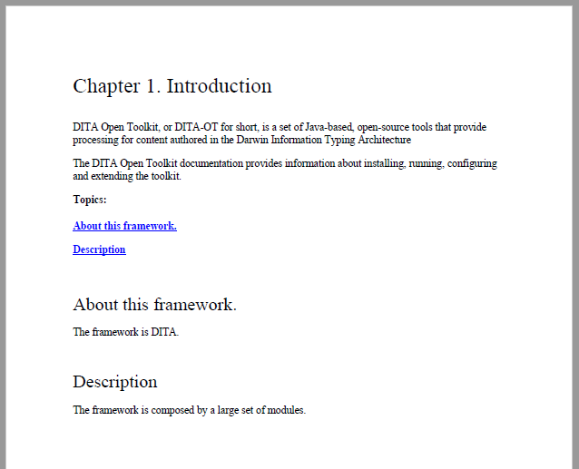

Table of Contents on a Page (Mini TOC)
To add a mini table of contents for each chapter, you need to:
- Use DITA bookmaps instead of regular maps.
- Set the
args.chapter.layouttransformation parameter to either of the following values: MINITOC or MINITOC-BOTTOM-LINKS.
Layout for MINITOC
This table of contents is
positioned between the chapter title and the chapter child topics. It consists of a list of
links pointing to the child topics, positioned in the left side of the page, and a
description in the right side. This content is collected from the topic file referenced by
the chapter <topicref> in the map.
Layout for MINITOC-BOTTOM-LINKS
This table of contents is positioned between the chapter title and the chapter child
topics. It consists of a chapter description and list of links pointing to the child topics,
under the description. This description is collected from the topic file referenced by the
chapter <topicref> in the map.

The above chapter example has the following DITA map fragment:
<chapter href="topics/chapter-introduction.dita"> <topicref href="topics/introduction-about.dita" /> <topicref href="topics/introduction-description.dita" /> </chapter>
The chapter-introduction.dita file provides the description content that
is in the right side of the page. The children <topicref> elements
generate the mini TOC links.
Table of Contents for Chapters (Mini TOC) - XML Fragment
In the merged XML file, the mini TOC is built from a related links section and some
<div> elements that wrap the entire mini TOC and the description
area.
- chapter/minitoc
- Wraps the entire structure, including the content of the chapter
<topicref>. - chapter/minitoc-links
- Wraps the
<related-links>element. Note that the label of the related links list is internationalized. - chapter/minitoc-desc
- Contains the entire content of the topic file referenced by the chapter
<topicref>element in the map.
<div class="- topic/div chapter/minitoc "> <div class="- topic/div chapter/minitoc-links "> <related-links class="- topic/related-links "> <linklist class="- topic/linklist "> <desc class="- topic/desc "> <ph class="- topic/ph chapter/minitoc-label ">Topics: </ph> </desc> <link class="- topic/link " href="#unique_2" type="topic" role="child"> <linktext class="- topic/linktext ">About this framework.</linktext> </link> <link class="- topic/link " href="#unique_3" type="topic" role="child"> <linktext class="- topic/linktext ">Description</linktext> </link> </linklist> </related-links> </div> <div class="- topic/div chapter/minitoc-desc "> <shortdesc class="- topic/shortdesc ">DITA Open Toolkit, or DITA-OT for short, is a set of Java-based, open-source tools that provide processing for content authored in the Darwin Information Typing Architecture</shortdesc> <body class="- topic/body "> <p class="- topic/p ">The DITA Open Toolkit documentation provides information about installing, running, configuring and extending the toolkit.</p> </body> </div> </div>
When using the pdf-css-html5 transformation, this structure is converted to
a set of HTML elements, preserving the class values:
<div class="- topic/div chapter/minitoc div minitoc"> <div class="- topic/div chapter/minitoc-links div minitoc-links"> <div class="wh_related_links"> <nav role="navigation" class="- topic/related-links related-links"> <div class="- topic/linklist linklist linklistwithchild"> <div class="- topic/desc desc"> <span class="- topic/ph chapter/minitoc-label ph minitoc-label">Topics: </span> </div> <ul class="linklist"> <li class="- topic/link link ulchildlink" href="#unique_2" type="topic" role="child"> <strong> <a href="#unique_2">About this framework.</a> </strong> <br/> </li> <li class="- topic/link link ulchildlink" href="#unique_3" type="topic" role="child"> <strong> <a href="#unique_3">Description</a> </strong> <br/> </li> </ul> </div> </nav> </div> </div> <div class="- topic/div chapter/minitoc-desc div minitoc-desc"> <div class="- topic/body body"> <p class="- topic/shortdesc shortdesc">DITA Open Toolkit, or DITA-OT for short, is a set of Java-based, open-source tools that provide processing for content authored in the Darwin Information Typing Architecture</p> <p class="- topic/p p">The DITA Open Toolkit documentation provides information about installing, running, configuring and extending the toolkit.</p> </div> </div> </div>
Table of Contents for Chapters (Mini TOC) - Built-in CSS
The built-in CSS rules are in: [PLUGIN_DIR]/css/print/p-chapters-minitoc.css.
How to Style the Table of Contents for Chapters (Mini TOC)
Suppose that you do not want the links and the chapter description to be side by side, but instead place the links above the description. Also, you may choose to remove the label above the links and put all the links in a colored rectangle with decimal numbers before them.
In your customization CSS, add the following selectors:
/* Change from inline to blocks to stack them one over the other. */ *[class~="chapter/minitoc-desc"], *[class~="chapter/minitoc-links"] { display: block; width: 100%; } /* No need for the 'Topics:' label. */ *[class~="chapter/minitoc-links"] *[class~="topic/desc"] { display:none; } /* Add background for the links list. */ *[class~="chapter/minitoc-links"] { background-color:silver; padding:0.5em; } /* Remove the border and the padding from the description. We do not need that separator. */ *[class~="chapter/minitoc-desc"] { border-left:none; padding-left:0; } /* Add a number before each of the links. */ *[class~="chapter/minitoc-links"] *[class~="topic/link"] { display:list-item; list-style-type:decimal; margin-left:1em; }